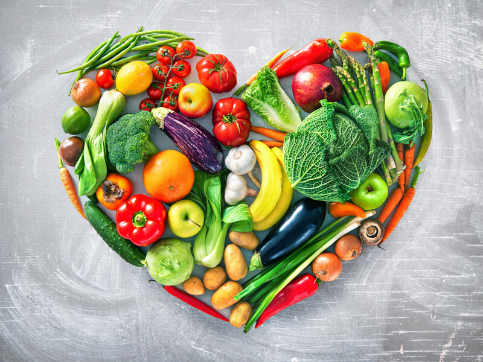
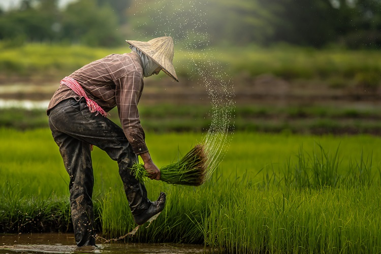

Straight from the Farm to Your Table: How We Ensure Freshness
Experience the vibrant flavors of Malaysia with our farm-fresh vegetables delivered straight to your table. At FarmMarket, we take you on a journey from our lush Malaysian farms to your kitchen, ensuring unparalleled freshness with each bite. Discover the true taste of local agriculture and the benefits of farm-to-table goodness.
Read More

The Impact of Fresh Produce on Your Health
Malaysia's rich agricultural diversity offers a multitude of benefits for your well-being. Our blog delves into the nutritional advantages of indulging in fresh produce from our local farms. Explore how a diet infused with farm-sourced goodness can enhance your health, all while celebrating the flavors of our nation.
Read More

A Day in the Life of a FarmMarket Farmer
Take a sneak peek into the heart of Malaysian agriculture as we share 'A Day in the Life of a FarmMarket Farmer.' Meet the dedicated individuals behind the scenes, cultivating our produce with love and passion. From the fertile fields of Malaysia to your homes, our farmers' dedication ensures the exceptional quality of our vegetables.
Read More